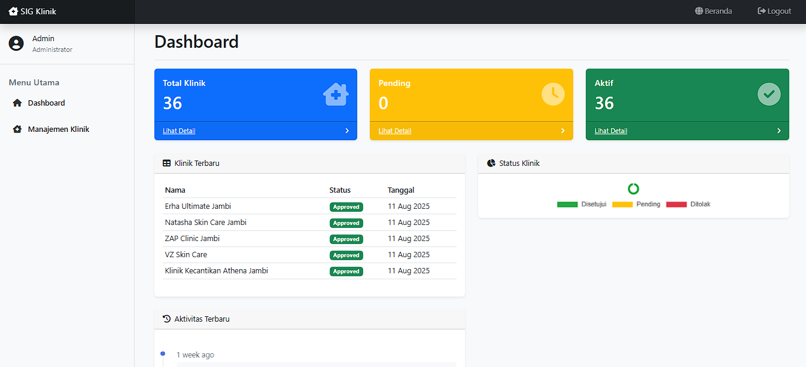
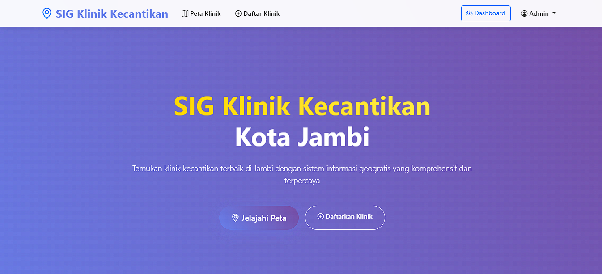
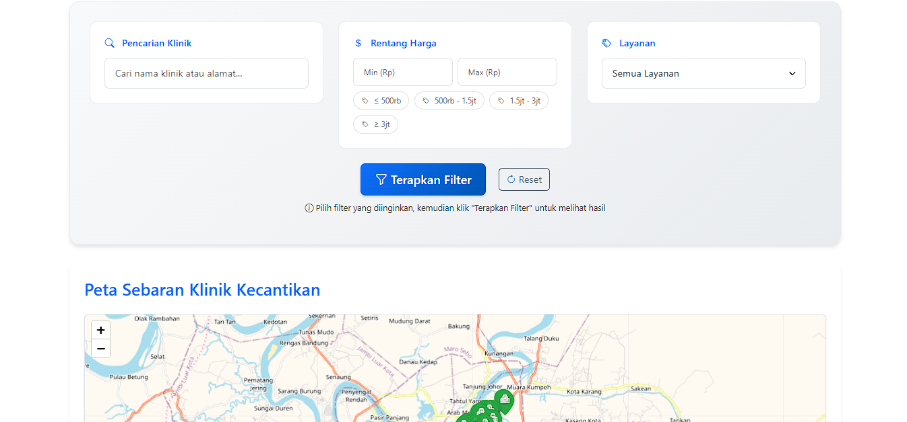
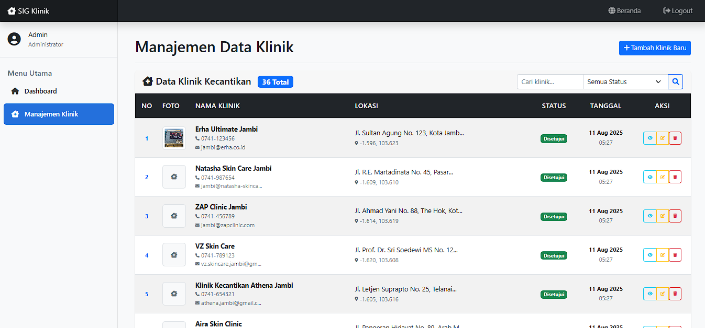

A geographic information system developed to map the distribution of beauty clinics in Jambi City. This application provides interactive visualization of beauty clinic locations along with detailed information to help the community find the nearest beauty services using modern mapping technology.
Interactive map visualization with beauty clinic location markers in Jambi City
Clinic data management system with complete address, contact, and service information
Clinic search based on location, service type, and other criteria
Distribution analysis and beauty clinic statistics per region
User management system with role-based access control
Responsive and mobile-friendly interface for access from various devices

Main page with system overview and user-friendly navigation

Interactive visualization of beauty clinic distribution with location markers

Interface for managing clinic data, add, edit, and delete information